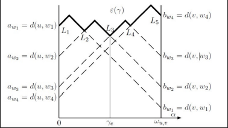

二分图概念
二分图简单来说，就是一个无向图，可以把点集分为两个，且边都是从一个点集指向另一个点集。
二分图有另一个等价的定义：没有奇环。相对而言这个性质更加重要。
题目链接
思路：考虑按位置插入，原来位置是一个从小位置指向大位置的，插入后变成了两个小的指向一个大的，相当于有一个原来大的变成了小的。我们发现每次操作都是把一个原本是大的的转换为小的，所以我们每次取大的里面最大的，贪心即可。
题目链接
思路：
先介绍一个定理，不然这个题做不了。
设m, n为正整数，p为素数，则喊p的幂次等于m + n在p进制下的进位次数。
证明：我们发现p是素数，我们知道，那么含有p的幂次等于
我们发现对于每一个i，答案不会超过1，考虑什么时候为1，可以发现是在p进制下第i位发生进位时取到。
这一类题目都是库莫尔定理 + 数位dp的，考虑dp[i][j][k][l]表示考虑了前i个位置，进了j次位，前面已经等于/小于边界，上一位是否需要进位。那么剩下的问题就是转移的时候的组合数，即我们要统计在这一位有多少对(k, n)满足条件（可能有进位，并且另一个位置还要在可行范围内），可以以p为边界分开计算，然后转移即可。
题目链接
思路：最小直径生成树也算是一个比较固定的东西了。考虑要求最小直径。一个比较容易想到的做法是求某个点，剩下点中最短路最大的两个点组成直径。但是发现显然是错的，因为最大的两个最短路可能共用了一些边，不符合直径的定义。最小直径生成树其实其实有一个等价的定义，图的绝对中心，就是图上到各点距离最大值最小的点，这个绝对中心可以在边上。很显然，绝对中心到其他点的距离最大值会出现两次。最小直径生成树的直径就是绝对中心到其他点的距离最大值*2。那么我们只要求出绝对中心，这题就解决了。
我们考虑枚举一条边(u, v)，找两个点x, y到u, v。首先我们可以发现，如果某个点到u, v的距离均大于另一个点到u, v的距离，那么另一个点就不可能成为x或者y，换言之，成为决策的点中，按到u距离从小到大排序，那么它们到v的距离一定是从大到小的。
那么考虑另一个问题，就是怎么判断x, y是否共用了一些边作为它们的最短路呢，我们发现，如果x到u的距离大于y到u的距离，x到v的距离却小于y到v的距离，那么它们一定是从边(u, v)两侧过来的，不会共用最短路边。而我们要求的是加起来最大的值，前面又说过，它们到u，v距离增减性是刚好反过来的。所以我们只需要枚举相邻的即可。
另一种理解可以看这个图：

这是已经删掉无用点后的图，其实也就是求每个峰对应的答案。
写代码的时候并不用真的删点，只需要记录一下上一次用过的在哪里就行了。
还有一个问题就是求出了最小直径生成树的直径，怎么求最小直径生成树呢？答案就是从绝对中心开始跑一边最短路径树就行了，记住是绝对中心不是u或者v开始跑。
欧拉回路简单来说就是一笔画问题，要求一条路径使得每条边都刚好经过一次。
无向图有欧拉回路当且仅当每个顶点度数为偶数
无向图有欧拉回路当且仅当每个点入度等于出度
Hierholzer算法是一种高效求解欧拉回路的算法，复杂度为。
1、随便选择一个点作为初始点。
2、进行dfs，将走过的点标记，只能走没有标记过的边（无向图需要来回都标记）。
3、当做完所有边后，将该点压栈。
4、将栈从栈底到栈顶输出，即是一条欧拉回路。
感觉也没啥正确性证明的，因为算法本身模拟的路径就是欧拉回路。。。
dfs的时候对边要进行当前弧优化！看了网上一半以上的板子都是错的，估计也是很少被卡。但是不进行弧优化的复杂度确实是错的。
题目链接
思路：考虑能到的点抽出来构成一个森林，并且每个树分为两种，有根和无根。有根我们发现直接树形dp，树上背包合并一下即可。无根的考虑把每一个点当成根，我们发现，一种方案有x个点，会被统计sz - x次(x < sz)，x = sz时刚好会被统计一次。所以我们把一整个树拿出来，每个点来树形dp，然后再合并到答案上去即可。关于合并时的方法数计算，可以用组合公式推，但一个更简单的方法是可以预处理f[i][j]表示i个和j个合并的方案数，这个非常好递推。
一直想借个契机重新了解下认真学下SAM，终于板子出问题了不得不深入探究一下。
基本内容先暂时不写吧，以后有空再补
fail树是SAM中最重要的东西（应该是一切自动机算法上最重要的东西）。所以熟悉掌握fail树的性质很有必要。
1、树上每个点代表了根据right集合划分出的一个等价类。
2、某个点的right集合等于他所有儿子的right集合或者他所有儿子的right集合 + 1（自身）（但广义SAM中不一定，广义SAM正确的写法一个点就可能有多次）。
3、两个串的最长公共后缀对应fail树上两节点的lca点内的某个串。
4、求某个字串出现了多少次，就是求该串对应点的子树的right集合的大小。
5、对于每个点都暴力跳fail链，总复杂度是$O(n\sqrt(n))$
其实本文的重点是广义SAM，因为广义SAM各种乱七八糟的写法，大多数都不能完全应对所有情况，主要分析每种写法的问题在哪里。
简而言之就是SA留下的后遗症，用间隔符把多个串串起来，然后就变成了单串SAM了。这个方法主要是可能会存在各种特判问题，所以非常不推荐，我写不会去写这玩意。。。
大多数都是直接在不同串插入以前，将last重置为1，然后就按照单串插入去做了，我们先来看看会有什么问题。
假设加入两个串：3201和0
结束后last = 6，很明显我们发现不对，没有任何路径能到6。原因是因为单串SAM构造时，last点一定不可能通过当前加入的点转移到最新的点，因为整个串一定是最新的没有被加入过的，但是多串的时候可能就存在已经加入过的问题，那么当有不连续情况存在时，就会新建节点，将fail上所有关于c的转移全部给到新建节点上，最后就会得到如图情况。
如果要做right集合线段树合并等需要在树上对应点操作的事情，就会出问题了，你可能构造的时候做到了点6上，但是最后访问到的是点7，就会出错误。
怎么办呢，发现复制的新建点是我们想要的last点，所以特判一下last节点应该是哪个点即可。
假设加入两个串：3201、0、0
发现最后6、8都是多余的状态，所以还可能产生某些多余的状态。
如果我们要统计各个点出现次数，只要我们不用基数排序，dfs或者拓扑排序都不会出现问题，因为他的链接是对的，只是出现了多余的状态，但不会有路径能走的到多余的状态。
正确如下：
last最后是7不是6，也不会产生多余状态，这样就需要在SAM里多两个特判就行了。
好像还有关于bfs和dfs建广义SAM的区别，后面有空再补。
题目链接
思路：因为有小于0就取0的限制，使得这个题非常不好做。考虑小于0取0，实际上是让你赚了一部分，如果二分答案mid，最后如果每一根都小于某个值，我们发现他最多赚了mid - x，我们将赚的这部分放到最后去，再倒过来做，那么这时我们发现整个过程就不能有小于0的时候，因为一旦有代表那个位置你必须变为0，最后结果一定会大于mid，所以我们发现这样做就把小于0取0的限制去掉了，原问题变成了从mid开始逆过程，不能有小于0的部分，最后结果要大于等于它给你的初始值，我们发现这样的话，每次我们选择最近快要到0的点进行拔高是最优的，一旦后面不需要再拔它就能满足要求了，我们就把它扔掉，最后看集合是否为空即可，用优先队列模拟一下就行了。思想就是通过放缩可以忽略掉某一种操作/某一维的限制。
题目链接
思路：考虑如果能形成环，我们肯定愿意形成环，而且环上两点可以任意到达，所以我们发现如果做双连通分量，同一个分量内的两个点一定能满足，问题变成了给一个森林，然后多对起点和终点，让你判断是否能给边定向使得能满足到达。一开始想树剖，后来发现不需要，直接用两个数组树上差分即可，只要不同时大于0就能满足，否则就不能满足。
马上要修一下tarjan的板子了。。。